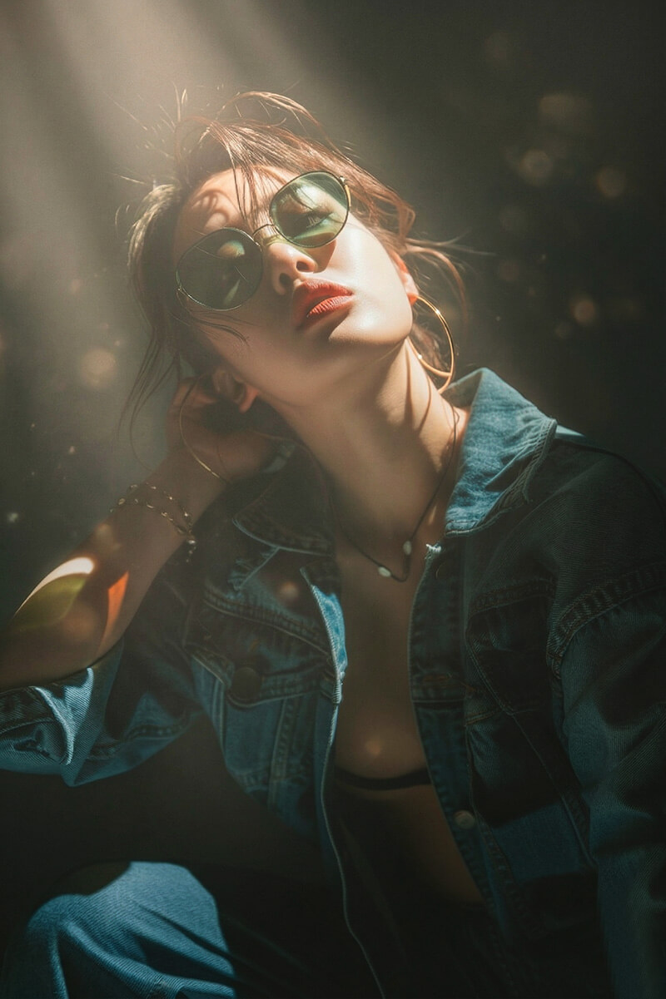
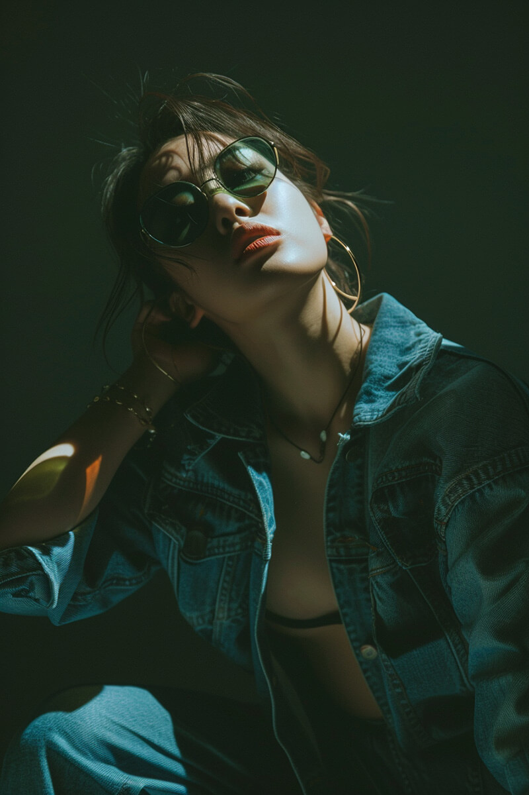
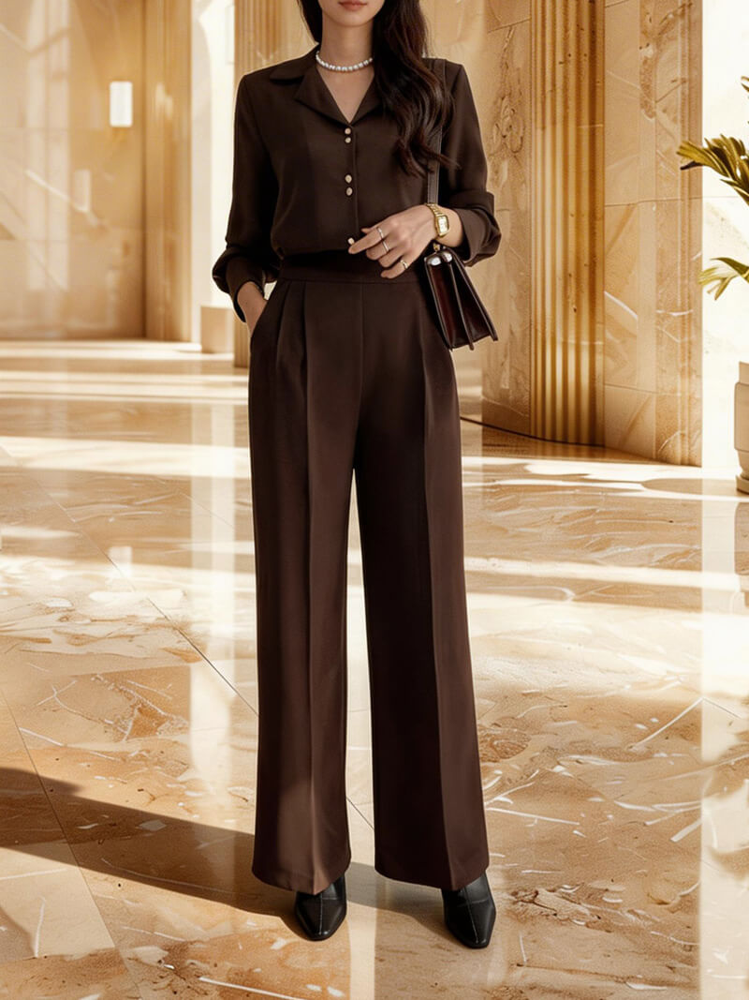
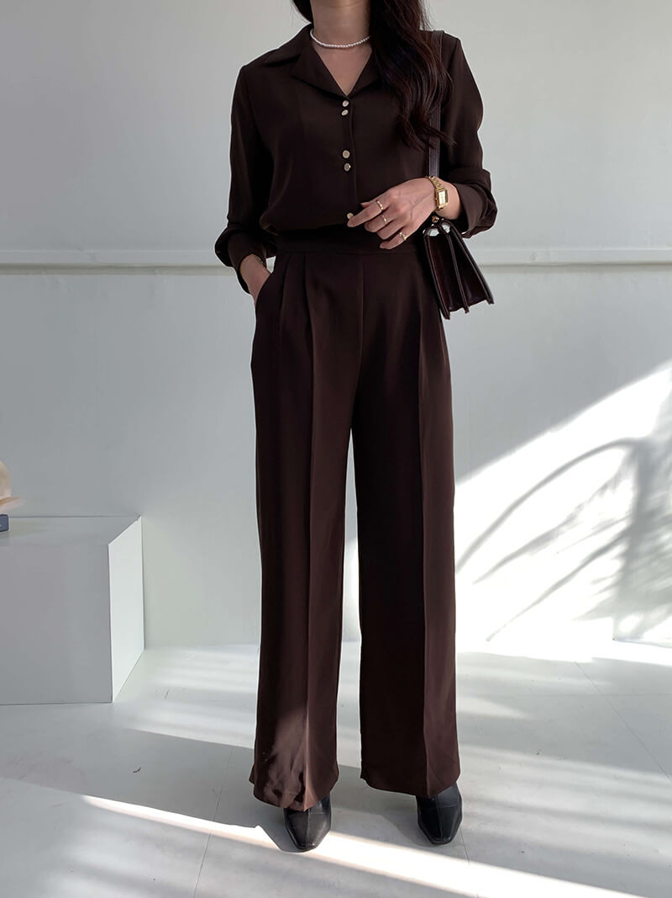
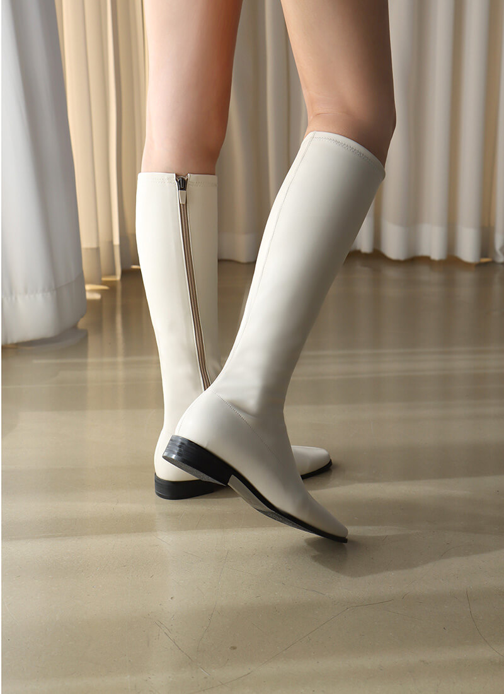
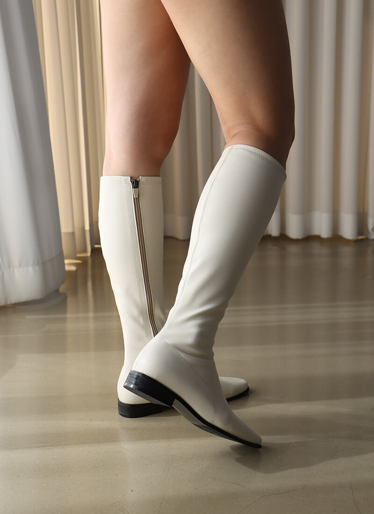
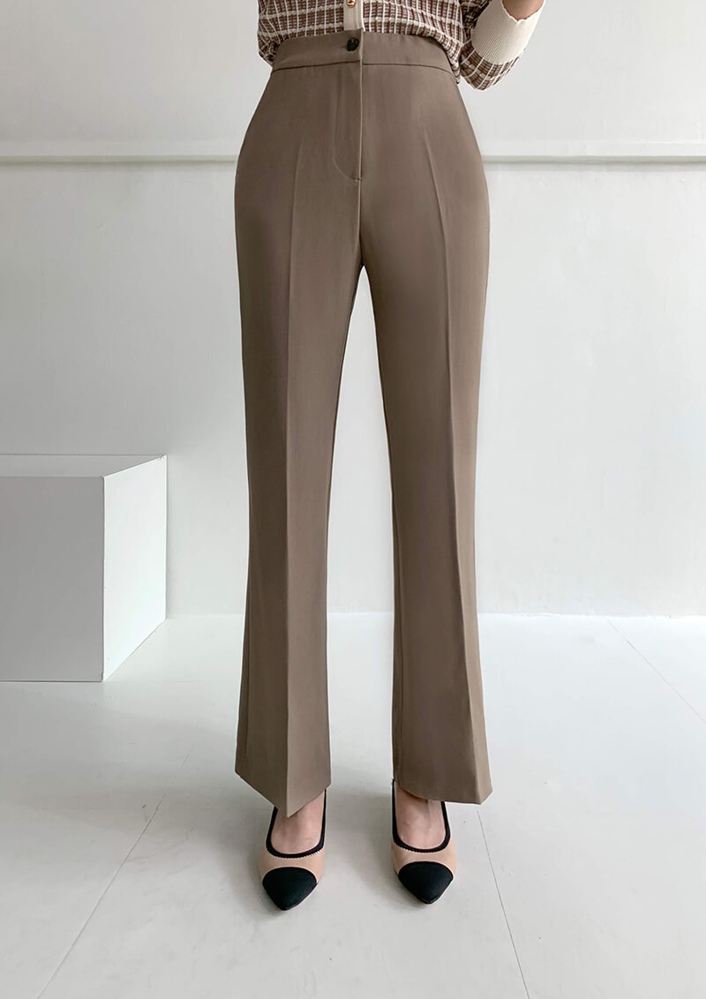
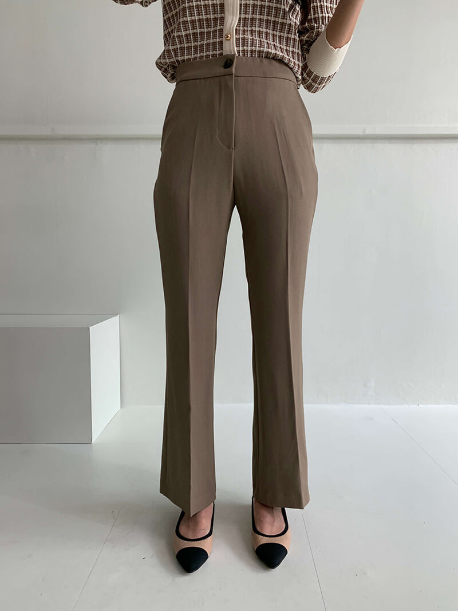

Retouching Collection
Portrait Retouching
Photoshop
Liquify
Lightroom
프로젝트 정보
역할
인물 피부톤 보정 및 윤곽 수정
연도
~
유형
실무프로젝트
분야
인물 리터칭
기여도
100%
01
작업 개요
자연스러운 피부 질감을 유지하면서 인물의 매력을 극대화하는 리터칭 작업물입니다.
잡티 제거, 피부 톤 균일화, 이목구비 정밀 수정 및 전체적인 색감 보정을 통해 고퀄리티 비주얼을 완성했습니다. 이미지에 마우스를 올리면 Before를 확인하실 수 있습니다.
Before (Hover)
After


01. Fashion Retouching
전신 비율 보정 및 실루엣 정리
Before (Hover)
After


02. Lighting & Mood
보정만으로 완성한 조명과 무드 연출
Before (Hover)
After


03. Skin & Silhouette Retouching
피부 톤 균형, 얼굴·바디 라인 보정
Before (Hover)
After


04. Image Compositing
실루엣 정리, 배경 합성 및 자연스러운 톤 매칭
Before (Hover)
After


05. Skin Refinement
피부 보정 및 컬러 밸런스 정리
Before (Hover)
After


06. Garment Refinement
의류 주름 정리 및 실루엣 정돈
Before (Hover)
After


07. Leg & Footwear
다리 라인 및 부츠 실루엣·톤 보정
Before (Hover)
After


08. Silhouette Correction